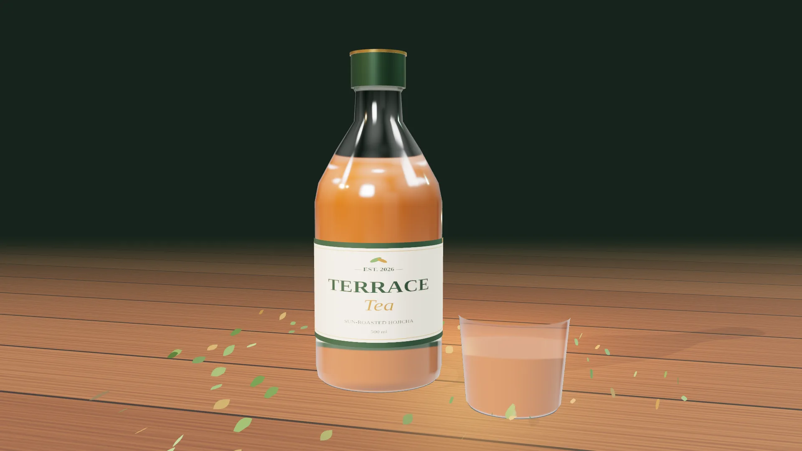

天日焙煎
直火ではなく、天日の熱で約8時間。焦げを出さずに、香ばしさと甘みだけを引き出します。
Sunlight, bottled.
天日焙煎ほうじ茶のボトルティー
「テラスティー」
01 — Sun-roasted
火ではなく、陽の光で。
時間をかけた焙煎だけが出せる、まるい香ばしさ。
02 — Nothing added
残るのは、お茶そのものの甘みと余韻だけ。
Concept
朝の光が差し込むテラス。風の通る縁側。仕事の合間に、ふと窓を開けた瞬間。
テラスティーは、そんな「外の時間」の心地よさを、いつでも持ち歩けるように生まれたボトルティーです。
静岡の茶畑で摘んだ一番茶を、太陽の熱だけでじっくり焙じました。
Craft
直火ではなく、天日の熱で約8時間。焦げを出さずに、香ばしさと甘みだけを引き出します。
使うのは、旨み成分がもっとも多い春の一番茶のみ。静岡・牧之原の契約農家から届きます。
砂糖、香料、保存料は不使用。原材料は「緑茶（国産）」とビタミンCだけです。

TERRACE Tea — Sun-roasted Hojicha, 500ml
How to enjoy
よく冷やして、ストレートで。香ばしさが、ゆっくり目を覚まさせてくれます。
カフェインはコーヒーの約1/5。集中を切らさず、気分だけを切り替えたいときに。
常温か、少し温めて。和菓子にも、チョコレートにもよく合います。
Spec
FAQ
砂糖は使っていませんが、天日焙煎によってお茶本来の甘みが引き出されています。後味はすっきりしています。
カフェインは100mlあたり約12mgと控えめですが、気になる方は医師にご相談のうえお楽しみください。
はい。キャップを外して耐熱容器に移し、湯せんや電子レンジで温めてください。ボトルのまま加熱しないでください。
はい。回数の縛りはなく、マイページから次回お届けの5日前まで変更・解約ができます。